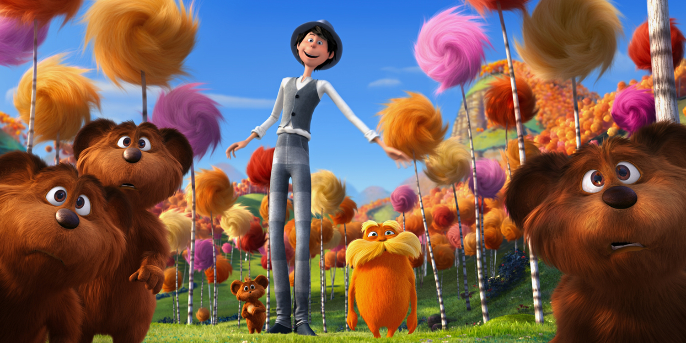
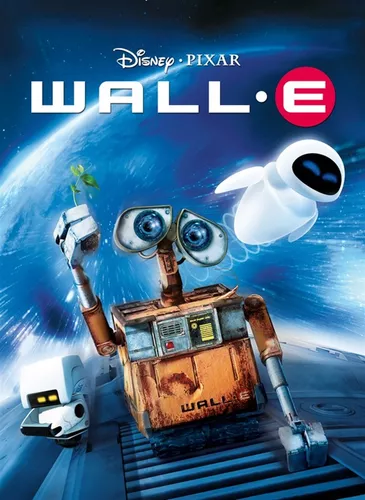
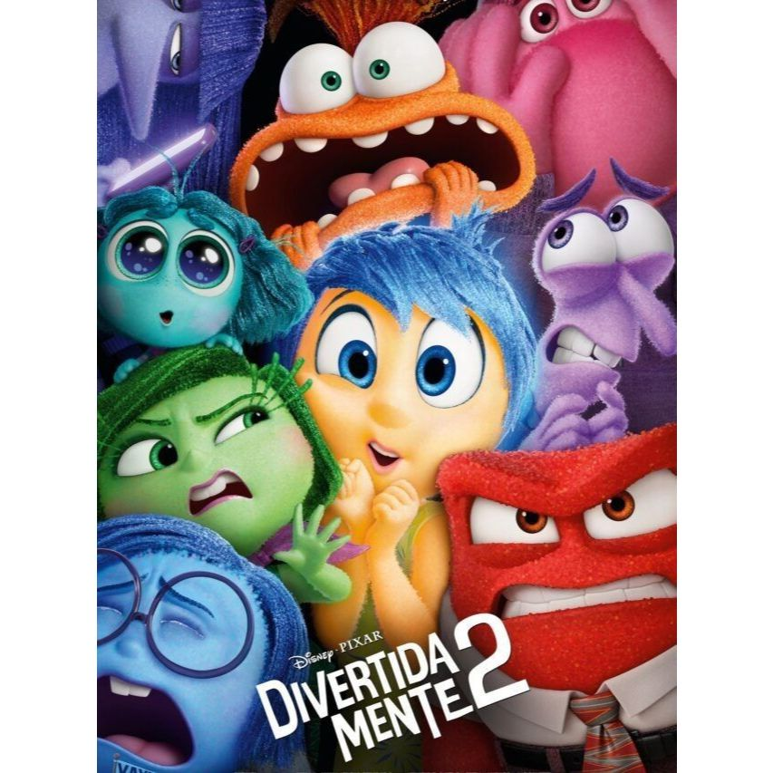
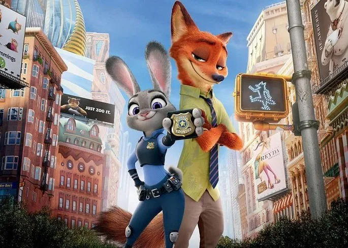

| Título do Filme |
Link |
Opinião |
Capa |
| Lorax |
Assistir | ;
Ted vive em um lugar onde as árvores são feitas de plástico e tudo é artificial. Ele deixa a cidade com
a intenção de trazer uma árvore de verdade para impressionar a garota por quem é apaixonado. |
 |
| Wally |
Assistir | ;
Após entulhar a Terra de lixo e poluir a atmosfera com gases tóxicos, a humanidade deixou o planeta e
passou a viver em uma gigantesca nave. O plano era que o retiro durasse alguns poucos anos, com robôs
sendo deixados para limpar o planeta. WALL-E é o último destes robôs, e sua vida consiste em compactar o
lixo existente no planeta. Até que um dia surge repentinamente uma nave, que traz um novo e moderno
robô: Eva. A princípio curioso, WALL-E se apaixona e resolve segui-la por toda a galáxia. |
 |
Divertidamente |
Assistir | ;
Com a mudança para uma nova cidade, as emoções de Riley, que tem apenas 11 anos de idade, ficam
extremamente agitadas. Uma confusão na sala de controle do seu cérebro deixa a Alegria e a Tristeza de
fora, afetando a vida de Riley radicalmente. |
 |
| Zotopia |
Assistir | ;
Em uma cidade de animais, uma raposa falante se torna uma fugitiva ao ser acusada de um crime que não
cometeu. O principal policial do local, o incontestável coelho, sai em sua busca. |
 |